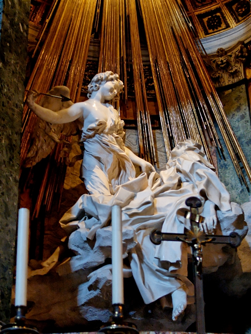

Assy(アッシー)のページ

詩やものがたり、世界史や政治経済、Linuxや散文などの内容です。
最近のひとりごと2: 最近の雑記(の続き)です。
最近のひとりごと: 最近の雑記です。
前書き: この本のまえがきです。
詩: 僕の思いを綴った詩集です。
詩2: 詩集のパート２です。
小説: 少ないですが、ものがたりを。
歴史: 世界各地の歴史と、ヨーロッパ近代史です。
政治経済: 政治と経済の話。自由主義と社会主義について。
コンピュータ: パソコンの話。Linuxのシステムやプログラミングについて。
人生と考え方: 僕の人生と、考え方について。
散文: 散文。哲学的な内容や、ひとことだけの文章。
その他: その他の内容。数学や外国語、リンク集など。
歴史まで読むと、歴史がきちんと分かると思います。
自己紹介。Assy（男、23歳）。文章が少し書けます。ピアノが少し弾けます。パソコンが少し分かります。学歴は高卒。一応大学生ですが、勉強は出来ていません。車には乗れません。今から勉強したい。彼女募集中。